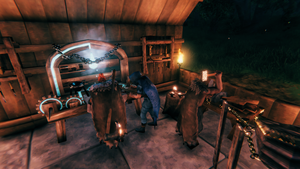
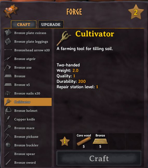
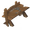
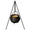
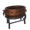
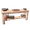
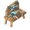
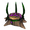
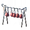
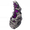

制作
本站支持中英文站内搜索。带 ↗ 的链接指向外部网站；各页来源版本见页脚。


部分基础物品可在玩家背包制作，但多数需要工作台或熔炉等专用制作设施。多数装备也能升级品质，提高耐久及其他属性。
制作机制


在制作设施中制作物品时，物品栏中必须备齐所需材料，并留出一个空位放置成品。
有耐久度的装备可以免费修理：前往制作它的设施，点击制作界面旁的锤子图标即可，背包制作不适用此方法。如果装备制作时需要较高等级的设施，修理时也必须达到同样的设施等级；提高装备品质不会提高修理所需的设施等级。
多数武器、工具及护甲可升级品质，通常最多升级3次至品质4，每次需更高设施等级。升级提高耐久及属性：武器伤害更高，护甲提供更多护甲。升级消耗大量资源，可能使总成本达到品质1制作成本的两至三倍。
例如巨魔皮胸甲需要2级工作台制作，因此无法在1级工作台修理。升至品质2需3级工作台，品质3需4级，以此类推。初次制作耗6份巨魔皮，升至品质4额外耗11份巨魔皮，总计17份。
制作设施列表
与这些设施互动可打开制作菜单，多数还允许在周围建造指定构件。在附近放置升级设施可提高等级，解锁更多配方或更高装备品质。
| 设施 | 用途 | 最高等级 |
|---|---|---|
| 物品栏 | 游戏开始时制作基础工具。 | 不适用 |
 工作台 |
制作前中期不需要金属的装备。 | 5 |
| 使用金属制作前中期装备，例如 青铜, 铁, 银 与 黑金属. | 7 | |
 铸铁锅 |
烹饪食物。每项升级都能解锁下一生态区域阶段的食物制作。 | 7 |
 蜜酒壶 |
准备 蜜酒主材料。这些材料必须放入 发酵桶 加工成蜜酒。 | 1 |
 灶台 |
准备 生鱼肉, 鱼饵, 盛宴 以及需要在以下设施烘烤的食物： 石砌烤炉. | 1 |
| 切石机 | 允许建造 石头, 黑大理石 与 灰石结构. | 1 |
| 通过献给以下对象来销毁物品： 奥丁. | 不适用 | |
 工匠台 |
允许建造 北境平原阶段的精炼设施，例如 高炉 或 石砌烤炉，并制作 弩炮弹药. | 2 |
| 制作后期武器和装备。 | 6 | |
 古咒法台 |
制作后期 魔法 武器和装备。 | 5 |
精炼设施列表
这些设施没有菜单，可直接通过互动点投入材料，用于精炼资源。
| 设施 | 用途 |
|---|---|
| 烹饪台 | 在以下热源上烹煮肉类： 火焰。由于大多数铸铁锅和灶台配方需要生肉，因此通常只用于游戏前期。 |
| 制作 木炭 ，材料来源： 木材. | |
| 冶炼炉 | 将前中期原始金属矿石熔炼 金属 成金属锭。 |
| 将蜜酒主材料发酵成可饮用的 蜜酒. | |
 铁烹饪台 |
在以下热源上烹煮大块肉类： 火焰. |
| 将中后期原始金属矿石熔炼成金属锭。 | |
| 烘烤在灶台准备好的食物。 | |
| 加工 亚麻 为 亚麻线. | |
| 加工谷物，例如 大麦 或 燕麦. | |
| 精炼 汁液 与 软组织 为 埃达精华. | |
| 寒冰窑 | 精炼 冰霜 为 液态冰霜. |
| 硬化 铸坯 为可用装备。 |
资源产出设施列表
这些设施无需投入材料即可收获资源，同样没有用户界面。
| 设施 | 用途 |
|---|---|
| 蜂房 | 获得 蜂蜜，用于制作蜜酒主材料。 |
| 鸟巢 | 获得 羽毛，用于制作 箭. |
 冥火之泉 |
获得 冥火，用于制作 冥火之光 以及建造 冥火火炬. |
| 提取中 汁液 ，材料来源： 远古树根，可精炼为 埃达精华. | |
| 永恒火堆 | 获得 余烬，用于制作 余烬炸药 ，用于炸毁 石化巨魔长老. |
| 攻略 | |
|---|---|
| 玩家 | |
| 战斗 | |
| 生成 | |
| 建材 | |
| 界面 | |
| 世界 | |
| 杂项 | |
| 开发 | |
Crafting is the process of converting and combining materials to create new items.
Some basic items can be crafted in the player inventory, but most items require a dedicated crafting station such as a Workbench or Forge. Most gear can also be upgraded to a higher quality, increasing its durability and other aspects.
Crafting mechanics
Crafting an item at a crafting station requires having the appropriate materials in the inventory, as well as an available slot in the inventory for the result.
Gear that has durability can be repaired for free using the hammer icon at the side of the crafting interface at the crafting station where it was crafted (excluding the inventory). Gear that requires a higher station level to be crafed can also only be repaired at a station at that level, upgrading it does not increase this requirement.
Most weapons, tools and armors can be upgraded to higher qualities, often up to 3 times to a quality of 4. Each upgrade level requires a higher station level. Upgrading increases the durability of the item, and also improves its properties: weapons deal higher damage, while armors provide more Armor. Upgrading costs a considerable amount of resources and can double or triple the crafting cost of a given item over its cost at quality 1.
For example, the Troll Leather Tunic requires a level 2 Workbench to be crafted. Thus, it cannot be repaired at a level 1 Workbench. Upgrading it to quality 2 requires a level 3 Workbench, to quality 3 a level 4 Workbench, etc. It initially costs 6 Troll Hide to craft, but upgrading it to quality 4 costs an additional 11 Troll Hide for a total of 17.
List of crafting stations
These stations can be interacted with to open the crafting menu. In addition, most allow the construction of specific building pieces around them. Their level can be increased by building upgrades in their proximity, which allows crafting additional recipes or upgrading gear to higher qualities.
| Station | Usage | Maximum level |
|---|---|---|
| Inventory | Crafting basic tools at the start of the game. | N/A |
| Workbench | Crafting early- and mid-game gear that does not require metal. | 5 |
| Crafting early- and mid-game gear using metal, such as Bronze, Iron, Silver and Black Metal. | 7 | |
| Cauldron | Cooking meals. Each of its upgrades enables crafting foods from another biome tier. | 7 |
| Mead Ketill | Preparing Mead Bases. Those have to be processed in a Fermenter to obtain Mead. | 1 |
| Food Preparation Table | Preparing Raw Fish, Baits, Feasts and food to be baked in the Stone Oven. | 1 |
| Stonecutter | Enables the construction of Stone, Black Marble and Grausten Structures. | 1 |
| Getting rid of items by offering them to Oden. | N/A | |
| Artisan Table | Enables the construction of Plains-tier refining buildings, such as the Blast Furnace or Stone Oven, and crafting Missiles. | 2 |
| Crafting late-game weapons and equipment. | 6 | |
| Galdr Table | Crafting late-game magic weapons and equipment. | 5 |
List of refining stations
These stations do not have an interface and can be interacted with directly using interaction points to supply materials. They are used to refine resources.
| Station | Usage |
|---|---|
| Cooking Station | Cooking meat over a fire. Since most Cauldron and Food Preparation Table recipes require raw meat, it is only used at the start of the game. |
| Creating Coal from Wood. | |
| Smelter | Smelting raw early- to mid-game metals into ingots. |
| Fermenting Mead Bases into drinkable Mead. | |
| Iron Cooking Station | Cooking large pieces of meat over a fire. |
| Smelting raw mid- to late-game metals into ingots. | |
| Baking food prepared at a Food Preparation Table. | |
| Processing Flax into Linen Thread. | |
| Processing grain, such as Barley or Oats. | |
| Refining Sap and Soft Tissue into Refined Eitr. | |
| Frigid Kiln | Refining Ice into Liquid Frost. |
| Hardening Casts into usable gear. |
List of harvesting stations
These stations are used to harvest resources without requiring any input. Similarly, they do not have an user interface.
| Station | Usage |
|---|---|
| Beehive | Obtaining Honey, used to craft Mead Bases. |
| Birds' Nest | Obtaining Feathers, used to craft Arrows. |
| Wisp Fountain | Obtaining Wisps, used to craft the Wisplight and build Wisp Torches. |
| Extracting Sap from Ancient Roots, to be refined into Refined Eitr. | |
| Eternal Pyre | Obtaining Embers, used to craft Ember Charges needed to blow up Petrified Gammeltrolls. |
| Guides | |
|---|---|
| Player | Player • Health • Stamina • Eitr • Adrenaline • Death • Forsaken power • Skills • Status effects • Movement speed • Magic • Fishing • Riding • Sleeping • Emotes |
| Combat | |
| Spawning | |
| Building | |
| UI | |
| World | |
| Misc | |
| Development | |